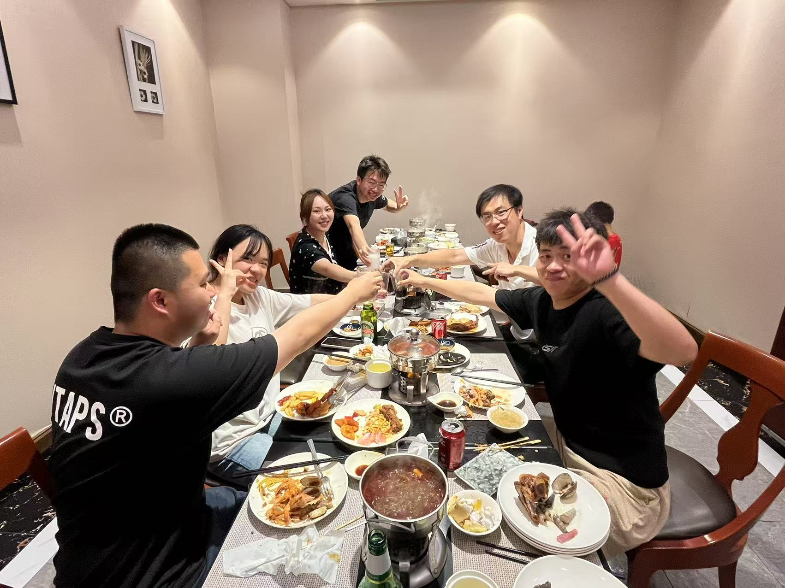
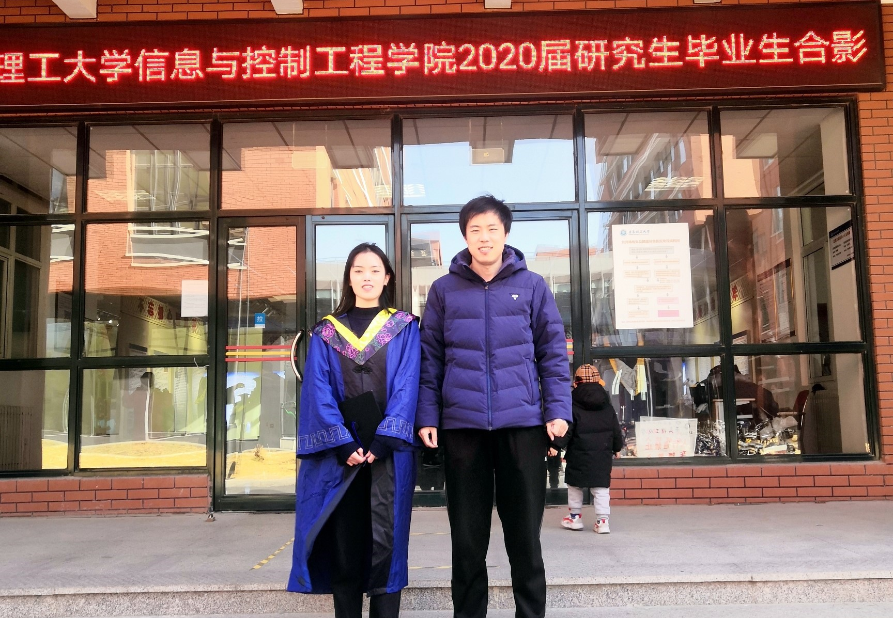

Publications
Please refer to full paper list on
my Google Scholar
-
- Keyong Hu, Guo Xiaolan, Liu Guoxiao, Yang Xin, and Wang Xupeng. Spatio-temporal Matrix Factorization Based Air Quality Inference, Gongcheng Kexue Yu Jishu/Advanced Engineering Sciences, 56 (5), pp. 146-155. 2024.
- Yuan Tianlong, Lin Jietao, Keyong Hu*, Chen Wenqian, and Hu Yifan. Domain Adaptive Urban Garbage Detection Based on Attention and Confidence Fusion, Information, 15 (11). 2024.
- Keyong Hu, Xiaolan Guo, Xueyao Gong, Xupeng Wang, Junqing Liang, Daoquan Li. Air quality prediction using spatio-temporal deep learning. Atmospheric Pollution Research. 2022, 13(10), 101543.
- Yifan Hu, Keyong Hu. An REC-MPSO-Based Computing Resource Cooperative Migration Method for Marine IoT. Arabian Journal for Science and Engineering. Online at https://doi.org/10.1007/s13369-022-06677-w.
- Keyong Hu, Xiaolan Guo, Xueyao Gong, Yifan Hu and Jerry Chun-Wei Lin. Spatial-Temporal Air Quality Inference based on Matrix Factorization. Proc. 2020 IEEE International Conference on Communications, ICC 2022, Seoul, Korea. May 16, 2022 - May 20, 2022. To appear. (CCF Rank C)
- Keyong Hu, Xianglin Song, Xueyao Gong, Zhongwei Sun and Chuanwang Song. Corruption Tolerant Localization for Underwater Acoustic Sensor Networks. Journal of Beijing University of Posts and Telecommunications. 2022, 45(1), pp. 61-70. (in Chinese).
- Keyong Hu, Xianglin Song, Xiaolan Guo, Zhongwei Sun and Chuanwang Song. Self-Localization Algorithm for Drifting-Restricted Underwater Acoustic Sensor Networks under Mixed Noise. Journal of Beijing University of Posts and Telecommunications. 2021, 44(6), pp. 63-73. (in Chinese).
- Keyong Hu, Xianglin Song, Zhongwei Sun, Hanjiang Luo and Zhongwen Guo. Packet Corruption Tolerant Localization for Underwater Acoustic Sensor Networks. Proc. 2020 IEEE Wireless Communications and Networking Conference, WCNC 2020, Seoul, Korea. May 25, 2020 - May 28, 2020.(CCF Rank C)
- Zhongwei Sun, Xiuyan Liu, Keyong Hu*, Zhuang Li and Jing Liu. An Efficient Multi-Label SVM Classification Algorithm by Combining Approximate Extreme Points Method and Divide-and-Conquer Strategy. Ieee Access. 2020, 8, pp. 170967-170975
- Keyong Hu, Xianglin Song, Zhongwei Sun, Hanjiang Luo and Zhongwen Guo. Localization based on MAP and PSO for drifting-restricted underwater acoustic sensor networks. Sensors. 2019, 19(1), 71.
- Keyong Hu, Zhongwen Guo, Guobing Ma, Wei Zhou and Zhingwei Sun. Complex Virtual Instrument Model for Ocean Sensor Networks. Ieee Access. 2018, 6, pp. 21934-21944.
- Keyong Hu, Zhongwei Sun, Hanjiang Luo, Wei Zhou and Zhongwen Guo. STVF: Spatial-Temporal Variational Filtering for Localization in Underwater Acoustic Sensor Networks. Sensors. 2018, 18(7), 24.
- Zhongwei Sun, Keyong Hu*, Tong Hu, Jing Liu, and Kai Zhu. Fast Multi-Label Low-Rank Linearized SVM Classification Algorithm Based on Approximate Extreme Points. Ieee Access. 2018, 6, pp. 42319-42326.
- Zhongwen Guo, Keyong Hu*, Yongguo Jiang and Zhaosui Sun. DPOI: Distributed software system development platform for ocean information service. Journal of Ocean University of China. 2015, 14(1), pp. 65-74.
Service
-
- Reviewer for International Journal of Communication Systems(IJCS)
- Reviewer for Journal of Ambient Intelligence and Humanized Computing(AIHC)
- Reviewer for Journal of Network and Computer Applications(JNCA)
- PC member and reviewer for ACM TURC 2020 - SIGAPP Symposia
- PC member and reviewer for ACM TURC 2019 - SIGAPP Symposia
Awards
-
- Shandong Computer Federation "Inspur Star Cup" Outstanding Master's Thesis award (Xiaolan Guo), 2024
- Shandong Computer Federation "Inspur Star Cup" Outstanding Master's Thesis award (Xianglin Song), 2022
- Outstanding scientific and technological innovation award of graduate students in Shandong Province, 2013
Supervised Master students:
-
- Xiaoping Xiao, 09/2024 - present
- Xingchen Ren, 09/2024 - present
- Jingxuan Zhang, 09/2023 - present
- Zihe Liu, 09/2023 - present
- JinZhang Zou, 09/2022 - present
- Xin Meng, 09/2022 - present
- Tianlong Yuan, 09/2022 - present
- Jietao Lin, 09/2022 - present
- Guoxiao Liu, 09/2021 - 06/2024
- Xueyao Gong, 09/2020 - 06/2023
- Xiaolan Guo, 09/2019 - 06/2022
- Xianglin Song, 09/2018 - 12/2020

